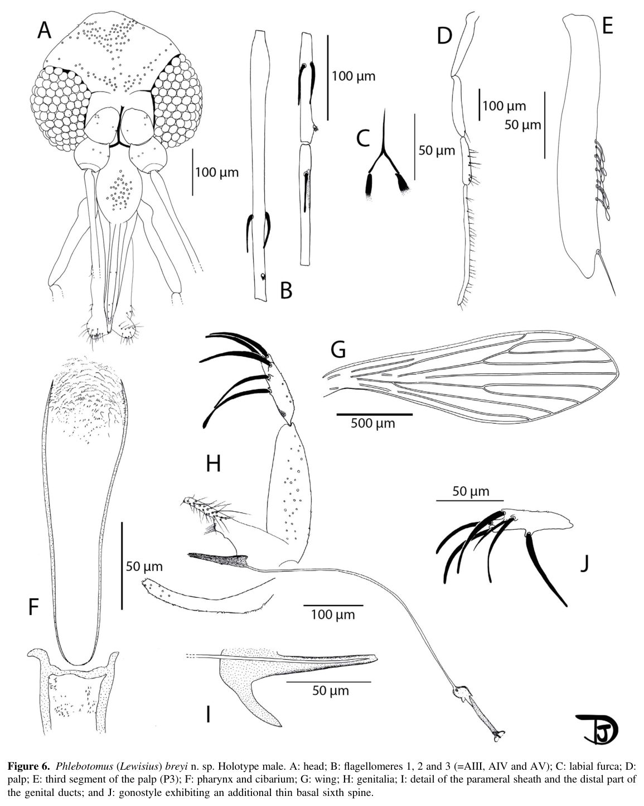
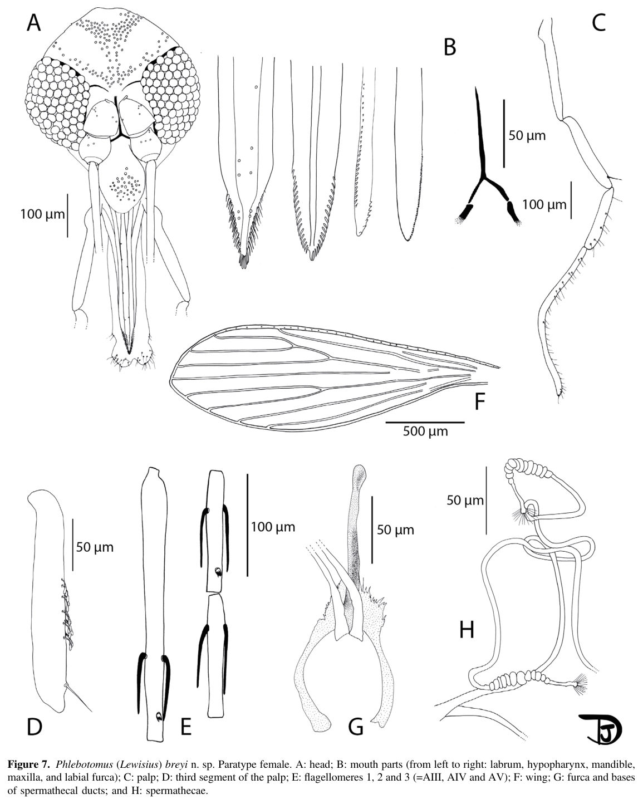

Species › Phlebotomus › Lewisius
Phlebotomus breyi
| Classification | Genus Phlebotomus, subgenus Lewisius |
|---|---|
| Status | valid |
| Distribution | Laos (described from Laos in Vongphayloth et al. 2023, cited in Vongphayloth et al. 2024) | Laos: Vientiane province (104 specimens) (Vongphayloth et al. 2026, Table 2) | Laos: type locality Pha Nok Kok cave (18°30′ N, 101°59′ E), Feung district, Vientiane province; sympatric with Ph. sinxayarami (Vongphayloth et al. 2023, p. 7) |
| Diagnostic notes | ♀ pharyngeal armature not pigmented; p4 > 130 µm; terminal knob of spermatheca on a long, narrow neck (Ph. sinxayarami: p4 < 120 µm, short wide neck). ♂ five gonostyle spines, simple paramere, aedeagal ducts > 500 µm (Vongphayloth et al. 2024 keys). Described in Vongphayloth et al. 2023 (Parasite 30: 21). One of two species described from Laos in a new subgenus in 2023 (Vongphayloth et al. 2023, cited in Vongphayloth et al. 2026). | Vongphayloth et al. 2023, differential diagnosis (Table 6, p. 19) against Ph. betisi and Ph. sinxayarami: ♀ ascoid formula 2/f1-f13, 0/f14 (same in all three); antennal papillae on f1-f2 and f12-f14, absent on f3-f11 (Ph. betisi: f1-f2, f9-f14; Ph. sinxayarami: f1-f2, f10-f14); f1 (AIII)/labrum < 1 (both others > 1); palp segment 4 > 141 µm (141-173) (Ph. betisi < 141 (126-141); Ph. sinxayarami < 141 (80-110)); spermathecae 'about 14-15 clearly separated rings with long neck', individual ducts > 400 µm, no common duct (Ph. betisi: about 20 rings, long neck, ducts < 400; Ph. sinxayarami: about 12-13 rings, short neck, ducts < 400). ♂ ascoid formula 2/f1-f9, 1/f10-f11, 0/f12-f14 (Ph. sinxayarami the same; Ph. betisi 2/f1-f6, 1/f7-f12, 0/f13-f14); papillae on f1-f2, f12-f14; aedeagal ducts > 500 µm and aedeagal ducts/sperm pump > 4 (both others < 500 µm and < 4). Measurements (Tables 4-5, pp. 17-18; min-max): ♀ p4 141.01-172.48 µm, p5 308.15-426.75 µm, f1/labrum 0.87-0.92 (Ph. sinxayarami p4 80.58-105.16, p5 135.30-293.55; Ph. betisi p4 126.39-140.66, p5 393.31-452.85); ♂ aedeagal ducts 535.60-655.39 µm, AD/sperm pump 5.03-6.25, p4 136.26-153.53 µm (Ph. sinxayarami 328.91-411.75, 3.35-4.02, 66.40-93.46; Ph. betisi 331-470, 2.74-3.92, 99-121). Both sexes: interocular suture incomplete (as in Ph. betisi; complete in Ph. sinxayarami) (p. 16); no papilla on f3 (all Lewisius, p. 16). Holotype ♂ (p. 12): gonostyle 117 µm with 5 thick spines (two terminal, upper external subapical, lower external in apical third, internal in the middle), an additional thin basal sixth spine on the holotype and one other specimen; simple paramere 189 µm; parameral sheath 100 µm, straight, blunt end; aedeagal ducts 561 µm; sperm pump 108 µm. Paratype ♀ (p. 12): individual spermathecal ducts 450 µm, smooth, thin-walled; spermathecae with 12 or 13 bead-like rings, terminal knob on a long and narrow neck; genital fork without lateral apodemes. CAUTION: ring counts in the descriptions (Ph. breyi 12-13, Ph. sinxayarami 14-15) are the reverse of Table 6 (see conflicts). |
| Sources | Vongphayloth et al. 2024, Vongphayloth et al. 2026, Vongphayloth et al. 2023 |
⚠ Conflicting characters
| Character | Source A | Source B | Type | Comment |
|---|---|---|---|---|
| Number of spermathecal rings (♀) | Vongphayloth et al. 2023: Descriptions: Ph. breyi 12 or 13 bead-like rings (p. 12); Ph. sinxayarami 14 or 15 (p. 16) | Vongphayloth et al. 2023: Table 6 (p. 19): Ph. breyi about 14-15 rings; Ph. sinxayarami about 12-13 | printing error | Internal inconsistency in the same paper; not certain which is right, so both kept as printed in the taxa notes. The other Table 6 characters (neck shape, duct length, p4) agree with the descriptions. |
| f1/(f2 + f3) ratio (♂) | Vongphayloth et al. 2023: Discussion (p. 16): main male character; low in Ph. breyi, intermediate in Ph. sinxayarami, high in Ph. betisi, 'no overlap' | Vongphayloth et al. 2023: Table 5 (p. 18): Ph. breyi 1.03-1.18, Ph. sinxayarami 0.88-1.23, Ph. betisi 1.07-1.17 | overlapping values | The printed ranges overlap; use aedeagal duct length, palps and interocular suture instead. |
How it keys out
The chain of characters leading to this taxon in each key (a ready-made diagnosis).
Laos karst (Vientiane): females (Vongphayloth et al. 2024) – couplet 5a
Laos karst (Vientiane): males (Vongphayloth et al. 2024) – couplet 5a
Figures



